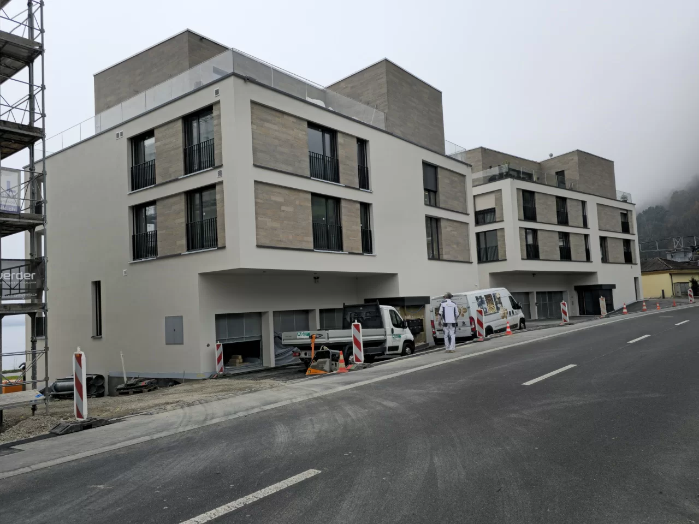
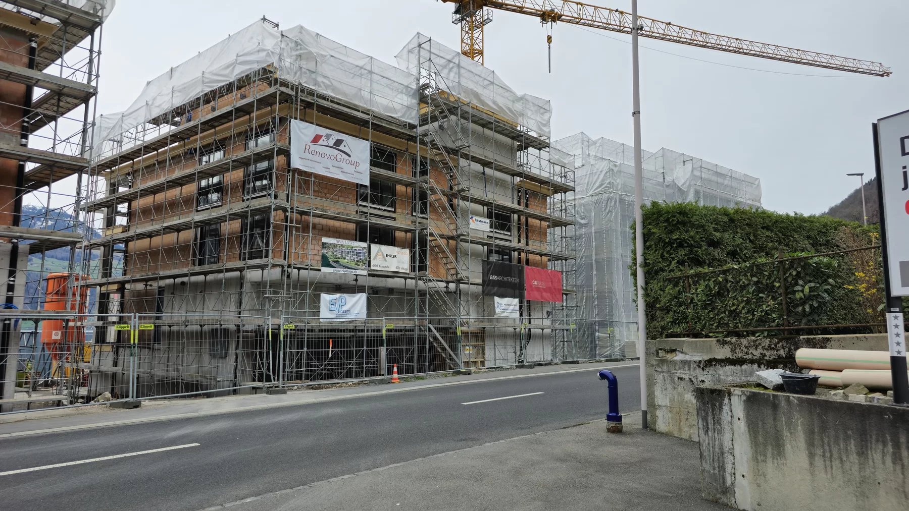
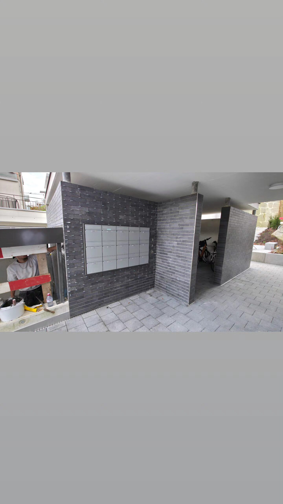

Unsere Leistungen als Plattenleger in der Region Luzern
Wir verlegen Platten innen und aussen: im Bad, in der Küche, auf dem Boden und an der Fassade. Hier sehen Sie im Detail, was wir machen.
Neubau

Auf dem Neubau arbeiten wir eng mit Bauherren und Architekten zusammen. Formate, Fugen und Übergänge planen wir, bevor die erste Platte gesetzt ist. So sieht das Ergebnis am Schluss so aus, wie es geplant war. Ein Beispiel dafür ist unser Projekt in Höri ZH, wo wir die kompletten Plattenarbeiten ausgeführt haben.
Renovation & Sanierung

Bei Renovationen muss Neues zum Bestehenden passen. Wir suchen Platten und Übergänge, die zum Bestand passen, und sagen Ihnen vorher ehrlich, was technisch geht und was nicht. So wirkt nachher nichts aufgesetzt.
Fassadenbau
Fassadenplatten machen viele Plattenleger nicht. Wir schon, und das seit Jahren: zum Beispiel in Gersau am Vierwaldstättersee, bei uns in Malters und am Lagerhaus des Marin Center in Neuenburg. Wenn Sie ein Fassadenprojekt planen, schauen wir es uns gerne an.
Beratung

Platten und Details lassen sich nicht austauschen, wenn sie verbaut sind. Kommen Sie darum mit Ihren Ideen zu uns, bevor Sie Material bestellen. Das spart oft Geld und meistens Ärger. Wir gehen Material, Format und Details mit Ihnen durch, bis Sie sicher entscheiden können.
Naturstein & Mosaik
Naturstein und Mosaik verlegen wir ebenfalls. Beides braucht mehr Geduld und Erfahrung als Standardplatten, gerade bei Zuschnitt und Fugenbild. Nach über 25 Jahren haben wir beides.
Trockeneisreinigung
Mit Trockeneis reinigen wir Platten und Fassaden schonend, ohne Wasser und ohne Chemie. Das eignet sich für Flächen, die man mit dem Hochdruckreiniger beschädigen würde.